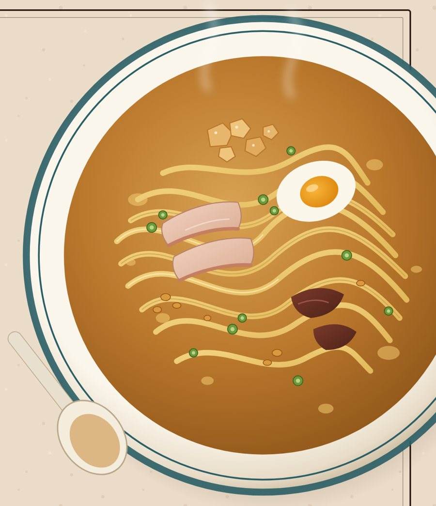
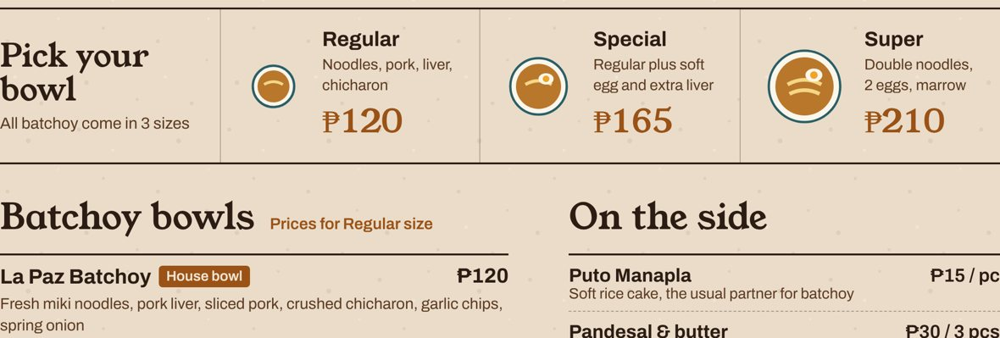

Menu design · SD-MN55
Get a menu like this
Dulang Batchoyan Ilonggo-style batchoy · English menu with ₱ prices
A4 portrait · 1 pageCoral stone, broth amber & ink brownTop-view batchoy bowl illustration
![Full Dulang Batchoyan menu. On a warm coral-stone background with a thin double frame, the large serif name Dulang and the line Ilonggo-style batchoy sit on the left above a short story about the pork-bone broth and a dark Free broth refill tag. On the right, a big top-view bowl with a teal rim holds amber broth, egg noodles, sliced pork, liver, a soft egg, chicharon and spring onion, with a spoon resting beside it. Below, a three-part strip shows Regular ₱120, Special ₱165 and Super ₱210 bowls drawn at growing sizes, then two columns: six batchoy bowls with an add-ons box on the left, and sides and drinks on the right, with opening hours and placeholder contact details at the bottom.](page1.png)

One hero bowlA single top-view bowl carries the whole page, so every topping a guest will find is visible before they order.

Size stripBowls drawn at three sizes answer the most common counter question at a glance.
What this menu does
- Colors come from the stone of old Iloilo churches and a pot of slow pork broth
- The free broth refill is called out near the name, where first-time guests look
- Add-ons sit in one box so the bowl list stays short and easy to scan
- Large type and dashed rules keep it readable on a wall or a counter stand